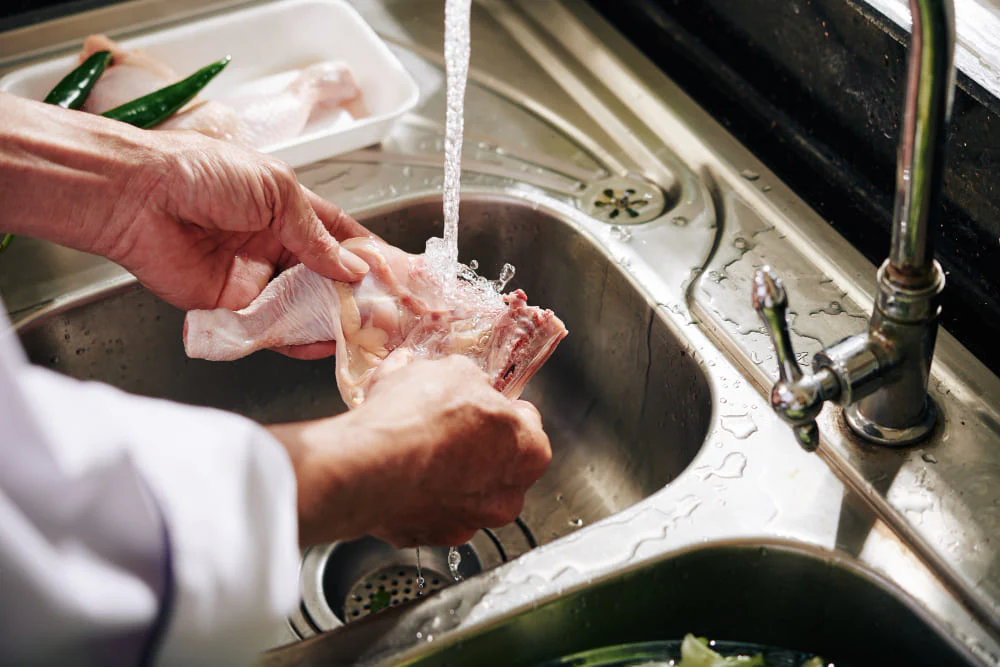
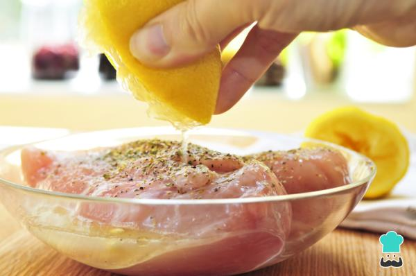
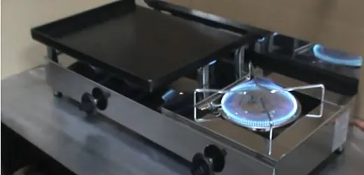
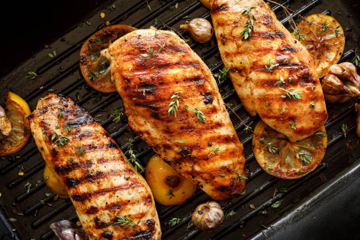
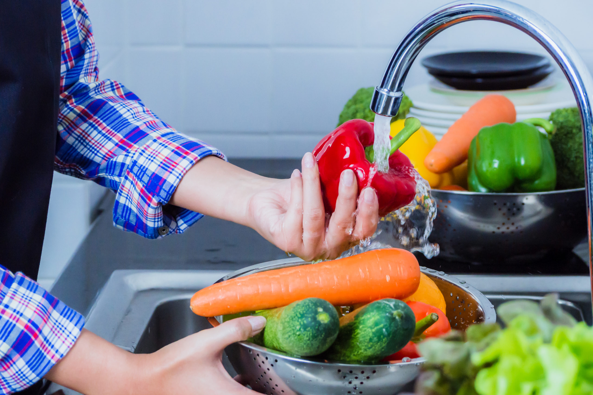
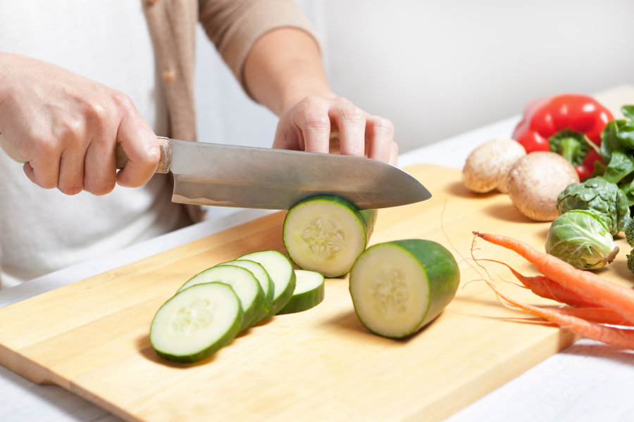
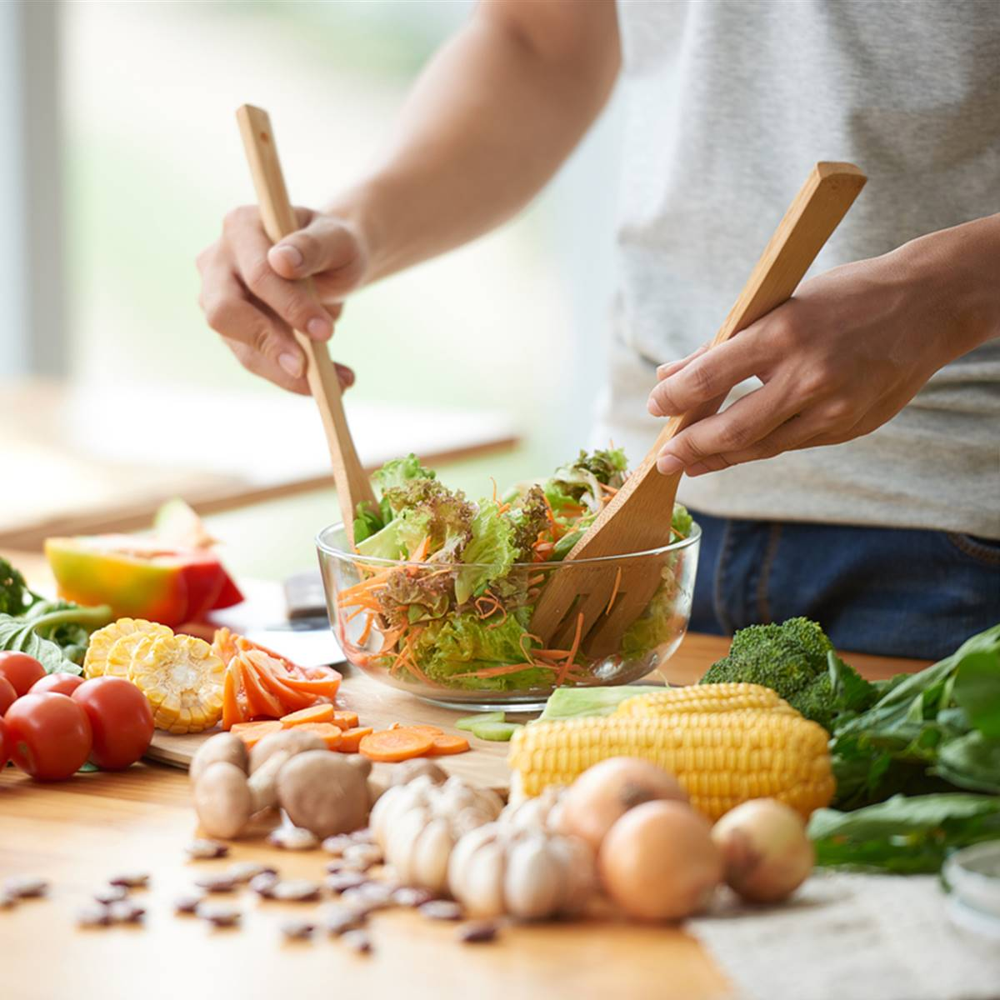
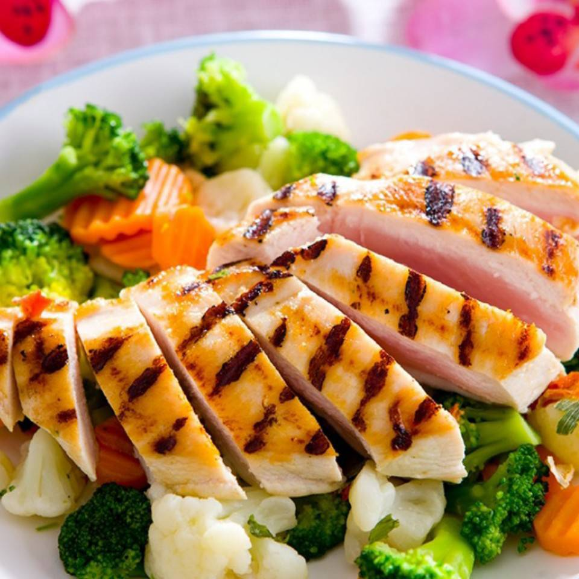

A continuacion les mostraremos como es la preparacion y que ingredientes se usan
Los ingredientes que necesitaremos seran:
Esto para el pollo
Esto para la ensalada
Como primer paso tendremos que lavar la pechuga, si ves que esta muy gruesa la puedes cortar para que se cocine de manera mas uniforme
El segundo paso es colocar la pechuga en un plato o en una tabla de picar y ponerle por la parte de adelante y de atras Media cucharadita de sal, pimienta negra y comino
Una vez realizado el paso anterior lo que tenemos que hacer ahora es poner a calentar la sarten, le ponemos media cucharada o una cucharada de aceite de oliva a la plancha esto es mas dependiendo del gusto de cada uno. Dejamos calentar la plancha por unos 5 o 3 minutos
Una vez pasado esos 5 o 3 minutos lo que haremos ahora es poner la pechuga en la plancha, por cada cara de la pechuga la dejamos unos 4 o 3
Una vez frita la pechuga, comenzaremos con la ensalada, primero lavamos bien las verduras que utilizaremos
Picamos 1 tomate en pedazos pequeños o en tiras largas, despues picamos tambien el 1/4 de cebolla en tiras largas o en cuadraditos pequeños, 1 zanahoria lo podemos hacer rallada o picada en cuadrados pequeños o tiras tambien y el 1/2 de aguacate hacemos lo mismo
La forma en que piquemos los vegetales dependera del gusto de cada uno
En un bol grande, mezclamos todas las verduras. Una vez puestas en el bol le pondremos las 2 cucharadas soperas de jugo de limon, 2 cucharadas de aceite de oliva y 1 cucharada pequeña de sal, lo removemos todo hasta que haya una mezcla uniforme
Lo ultimo que tenemos que hacer es servir el plato con la ensalada y pechuga juntas
Una porción de pollo a la plancha con verduras verdes (aproximadamente 150 gramos de pechuga de pollo, 200 gramos de verduras variadas y una cucharadita de aceite de oliva para cocinar) tiene la siguiente composición nutricional aproximada: 280 kcal, 35g de proteínas, 9g de grasas, 8g de carbohidratos y 4g de fibra
Y siguiendo todos los pasos anteriores asi deberia de quedar nuestro plato final
